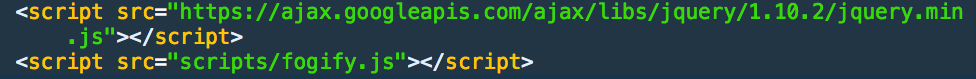
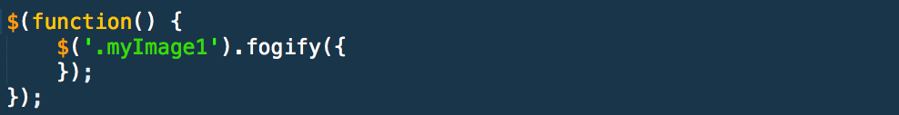

fogify.js is a jquery plugin that uses the canvas element to:
1. Include the 'fogify.js' file in your scripts folder.
2. Call the function in your main Javascript file, adjusting the default parameters where you see fit. The following example uses the default settings:
3. fogify.js accepts the following parameters:
| NAME | TYPE | DEFAULT | DESCRIPTION |
|---|---|---|---|
| particles | number | 20 | Amount of fog particles rendered on the screen |
| maxVelocity | number | .5 | Speed of fog particles in each direction |
| canvasWidth | string | element.width() | Width of the canvas element |
| canvasHeight | string | element.height() | Height of the canvas element |
| targetFPS | number | 33 | Target frames per second (how often the screen is updated or redrawn) |
| brushSize | number | 20 | Size of the brush the user draws with after the initial fog animation is run |
This plugin was derived from user Jonny C's JSFiddle on particles/ smoke effects with great help from William Malone's canvas drawing tutorial.